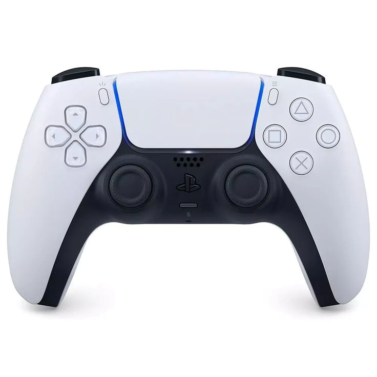

PlayStation 5
P1,390
Priced at around $69.99 USD. The DualSense features adaptive triggers that change resistance depending on in-game actions, haptic feedback for immersive vibration, a built-in microphone, a touchpad, USB-C charging, and motion sensors. It is considered a significant leap forward from previous PlayStation controllers in terms of immersion.
The PS5 delivers lightning‑fast loading, ray tracing, and immersive 3D audio for next‑generation gaming.

DualSense Wireless Controller
P1,390
Priced at around $69.99 USD. The DualSense features adaptive triggers that change resistance depending on in-game actions, haptic feedback for immersive vibration, a built-in microphone, a touchpad, USB-C charging, and motion sensors. It is considered a significant leap forward from previous PlayStation controllers in terms of immersion.
Experience adaptive triggers, haptic feedback, and a comfortable ergonomic design built for precision.
Access Controller
P2,085
Retails at around $89.99 USD. Designed specifically for players with disabilities, it is a highly customisable kit featuring a large circular disc, interchangeable button caps, adjustable stick sensitivity, and programmable buttons. It is compatible with PS5 only and is praised for making gaming more inclusive and accessible.
A customizable controller designed for players with accessibility needs, offering modular controls.
PS VR
P7,640
Priced at $549.99 USD at launch. The PS VR2 features an OLED display with HDR, a 110 degree field of view, and a resolution of 2000 x 2040 per eye at 90 or 120Hz refresh rate. It also includes eye tracking, headset feedback, and the PS VR2 Sense controllers with adaptive triggers. It is one of the most technically advanced consumer VR headsets available.
Step into immersive virtual worlds with high‑resolution displays and precise motion tracking.
PlayStation Portal
P2,780
Retails at $199.99 USD. The PlayStation Portal features an 8-inch 1920 x 1080 touch-enabled LCD display at 60Hz and runs on Android. It connects via Wi-Fi and streams games directly from a PS5 console. It is not a standalone console but a remote play device, praised for its build quality and DualSense integration though limited by its reliance on a stable internet connection.
A classic handheld console offering portable entertainment with iconic Sony game titles.
PlayStation 4
P2,780
Available secondhand or refurbished for around $199 USD. The PS4 features an 8-core AMD Jaguar CPU, 8GB of GDDR5 RAM, and a 500GB or 1TB hard drive. It supports 1080p gaming and has a library of thousands of titles. While no longer in production as a new unit, it remains a solid and affordable entry point into PlayStation gaming.
The PS4 delivers powerful performance and a massive library of award‑winning games.
DualShock 4 Wireless Controller
P970
Priced at around $69.99 USD new, often found cheaper secondhand. It features dual analogue sticks, a touchpad, a built-in speaker, a light bar, a 3.5mm headphone jack, and motion sensors. It is compatible with PS4 and select PS5 games and is considered one of the most comfortable controllers of its generation.
Responsive controls, a built‑in touchpad, and a comfortable grip for long gaming sessions.
T.Flight Hotas 4 Flight Stick
P1,530
Retails at around $69.99–$109.99 USD. It features 5 axes, 12 action buttons, a rapid-fire trigger, a multidirectional hat switch, a detachable throttle, adjustable stick resistance, and a weighted base for stability. It is officially licensed for PlayStation 4 and also compatible with PS5 and PC. It is well regarded as an entry-level to mid-range flight stick offering good value
A realistic flight stick designed for aviation and space simulation enthusiasts.
Logitech G29
P3,475
Retails at around $249.99 USD. The G29 features a leather-wrapped steering wheel, dual-motor force feedback, stainless steel pedals with a non-slip base, helical gearing for smooth and quiet operation, and compatibility with PS5, PS4, and PC. It is widely considered one of the best mid-range racing wheels available for PlayStation, offering a realistic and immersive driving experience.
A premium racing wheel with force feedback for an authentic driving experience.
.jpeg)


.jpeg)